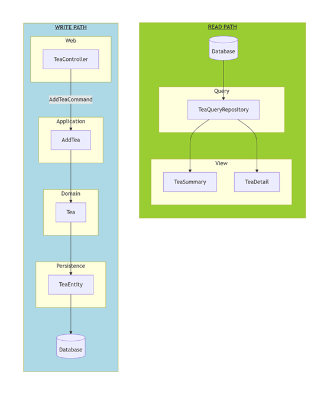

Decoupling Domain Logic from JPA Entities
In Software engineering, naming concepts properly is hard. And so is structuring a codebase. Recently I spent some time thinking about this while extending one of my hobby projects and I changed my long-held opinions. Let me briefly explain why.
Example #1: Syntactically Structured Code
This is what I usually find in a typical project at work (obviously simplified for illustration purposes):
📁 SegmentationService ├── 📁 Controllers │ ├── 📄 SegmentController.cs │ └── 📄 SegmentMembersController.cs ├── 📁 DataAccess │ └── 📄 SqlClient.cs ├── 📁 Exceptions │ ├── 📄 AuthenticationException.cs │ ├── 📄 ColumnNotFoundException.cs │ ├── 📄 ColumnTruncatedException.cs │ └── 📄 ... ├── 📁 Extensions │ ├── 📄 ExceptionExtensions.cs │ ├── 📄 IEnumerableExtensions.cs │ └── 📄 ... ├── 📁 Services │ └── 📁 SegmentService │ └── 📄 SegmentService.cs │ └── 📁 SegmentMembersService │ ├── 📄 MembersGroup.cs │ └── 📄 SegmentMembersService.cs ├── 📁 Storage │ └── 📄 DataLakeClient.cs ...
Notice how files are grouped according to syntactic constructs they implement - controllers together with other controllers, services with services. Every single exception in one package! Data access code randomly split into two places, DataAccess and Storage.
I am strongly convinced that this is not okay! This kind of layout doesn't help newcomers understand what the service does. Even in this trivial example, it takes some mental effort to notice that it implements two basic areas of functionality: segment lifecycle and segment members management. It also makes future changes awkward. Whether you're fixing a bug or introducing a new feature, your work will likely be scoped to segment lifecycle, segment members management, or an entirely new area. Regardless, you'll have to touch many files scattered throughout the codebase.
Let me remind you of an old piece of wisdom: code that changes together belongs together. Isolating changes reduces how much context our human brains need to hold at once.
I have always advocated this approach instead:
📁 SegmentationService ├── 📁 Segment │ ├── 📄 SegmentController.cs │ ├── 📄 SegmentService.cs │ ├── 📄 SegmentRepository.cs │ ├── 📄 SegmentStaleException.cs │ └── 📄 ... ├── 📁 SegmentMembers │ ├── 📄 SegmentMembersController.cs │ ├── 📄 SegmentMembersService.cs │ ├── 📄 SegmentMembersRepository.cs │ ├── 📄 TooManyMembersException.cs │ └── 📄 ... ...
Example #2: Fat Entities
Let's take a look at another example, this time taken from my hobby project My Tea Collection. It's a web application that allows to keep track of your tea collection. Naturally, its use cases revolve around tea.
Faithful to my principles, this is how I originally structured the repository:
📁 MyTeaCollection ├── 📁 Tea │ ├── 📄 TeaController.java │ ├── 📄 TeaEntity.java │ ├── 📄 TeaRepository.java │ └── 📄 ... ...
To avoid code duplication, I placed all tea-related behavior in TeaEntity, alongside its persistence annotations, and even referenced the class directly from views. I know this is an anti-pattern, but initially it seemed like less of a problem compared with maintaining several versions of the same class and its attributes.
As I was adding new features, at some point it became clear that TeaEntity class was becoming overly convoluted, it was getting more and more difficult to choose persistence annotations to satisfy all scenarios, etc.
In a way, this solution was an opposite extreme to the problematic codebase from the previous example. Before the problem was too little cohesion, now it was too much coupling.
DDD and CQRS
Incidentally, it was at this same time that I was re-reading my copy of Domain Driven Design by Eric Evans - a great book full of timeless wisdom, which I highly recommend. It was clear that a separate domain layer had to be extracted from the persistence entities, even if that meant a parallel class hierarchy.
However, that was only part of the puzzle - I still needed to deal with those complex persistence annotations. I was also wondering how to model different views of the same domain concept - think a view that renders a list of teas, each with only basic info, versus a detailed view of a single tea with all its properties.
After a discussion with Github Copilot I realized that, even though I would normally think of it only for Event Driven scenarios, CQRS (Command Query Responsibility Segregation) is a natural fit here. Specifically, only use the domain layer on the write path, to validate business rules and make sure data stored in the database are always consistent. On the read path, query the database directly and use simple view models, denormalized to best fit each scenario.
This is the architecture that I would have:

And this is the corresponding packaging structure:
📁 MyTeaCollection
├── 📁 Web
│ └── 📄 TeaController.java
├── 📁 Application
│ ├── 📄 AddTeaCommand.java
│ └── 📄 AddTea.java
├── 📁 Domain
│ └── 📄 Tea.java
├── 📁 Persistence
│ ├── 📄 TeaEntity.java
│ └── 📄 TeaRepository.java
├── 📁 Query
│ └── 📄 TeaQueryRepository.java
└── 📁 View
├── 📄 TeaSummary.java
└── 📄 TeaDetail.java
I think it's clear that this design is much more verbose - that is the cost I had to pay for a clear separation of concerns.
Model-Oriented versus UseCase-Oriented Layers
At this point you might be thinking - this is starting to look a lot similar to the introductory example - classes are grouped according to their role, rather than related functionality. In my opinion, the current situation is still better - at least you can clearly see the architecture layers. But, after new features are implemented and more and more classes added to each layer, those flat packages do become hard to navigate.
This is where I realized that it's very easy to split some layers by use case, while for other layers it is natural to stay compact. Those are layers which represent a model of the system of some sort, such as the domain model, or persistence schema of the database.
So my final package structure for this project, after implementing a new feature where users can now author tasting notes for teas, currently looks like this:
📁 MyTeaCollection
├── 📁 Domain
│ ├── 📄 Tea.java
│ └── 📄 TastingNote.java
├── 📁 Persistence
│ ├── 📄 TeaEntity.java
│ ├── 📄 TeaRepository.java
│ ├── 📄 TastingNoteEntity.java
│ └── 📄 TastingNoteRepository.java
├── 📁 Tea
│ ├── 📁 Web
│ │ └── 📄 TeaController.java
│ ├── 📁 Application
│ │ ├── 📄 AddTeaCommand.java
│ │ └── 📄 AddTea.java
│ └── 📁 Query
│ ├── 📄 TeaQueryRepository.java
│ ├── 📄 TeaSummary.java
│ └── 📄 TeaDetail.java
└── 📁 TastingNotes
├── 📁 Web
│ └──📄 TastingNotesController.java
└── 📁 Application
├──📄 AddTastingNoteCommand.java
└──📄 AddTastingNote.java
Conclusion
In this article I tried to demonstrate how I currently like to structure this kind of software - web applications, micro-services, etc. And explain the thoughts behind this system. Please reach out and let me know what you think. Does my reasoning make sense? Did you spot any issues I didn't think of? How do you like to structure your code?